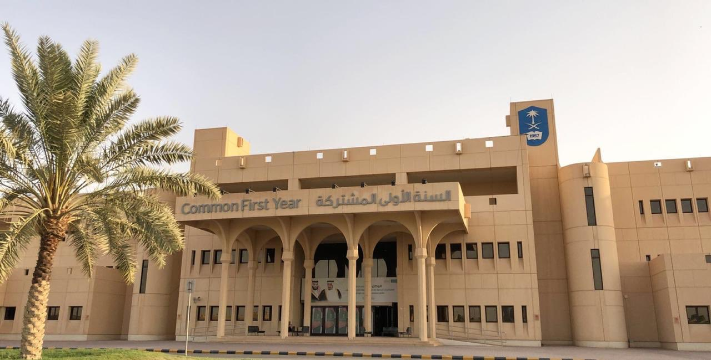

هي برنامج أكاديمي متكامل يتبع وكالة الجامعة للشؤون التعليمية يهدف لتمكين الطلبة من المهارات الأساسية اللازمة للدراسة في الجامعة. وقد بدأ تطبيق برنامج السنة الأولى المشتركة في جامعة الملك سعود عام 1425هجري، كما شهد البرنامج عدة تطورات على مدار السنوات الماضية، ووضعت الجامعة شرطا أساسيا لتجاوز البرنامج يتمثل في اجتياز الطالب جميع المقررات وحصوله على معدل تراكمي لا يقل عن 1,75 من 4